← 返回阅读库 · 原论文目录
论文讲解阅读文档 · 新模型 · v074
Searching for MobileNet V3[1905.02244]
视频时长 00:08:03；讲解文字 3,500 字符；提取讲解画面 21 张。按视频原顺序阅读，每段文字保留时间戳。
文字来自整段视频的自动语音转写，按自然停顿分段，并与 PPT / 论文页面 / 演示画面对齐。未将讲解压缩为摘要；术语、数字和口述公式请结合画面及原论文核对。 阅读稿已校正规范部分明确术语误识别；原始逐字稿和每处修改记录另行保留。
讲解画面为源视频截图（640×360），不是可编辑 PPT 文件。全片按每秒 2 帧扫描内容变化，逐步展开页保留；连续动画保留代表画面。清晰度受源视频限制。
下载完整资料包 · 含离线 HTML、PDF、Word、全部 PPT 画面和字幕。
原论文与材料
Searching for MobileNetV3 · 下载完整 PDF（11 页）
按时间阅读
00:00:00–00:00:28 · 画面 001
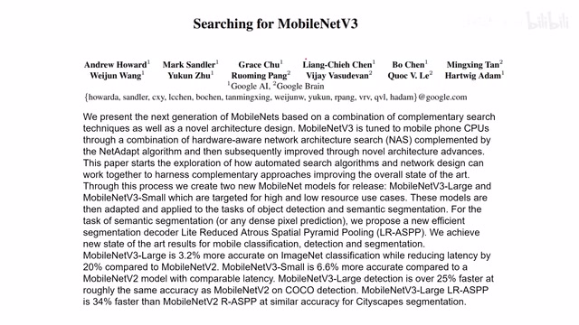
00:00:00–00:00:28 · 画面 001大家好今天我们来介绍 Searching for MobileNet v3 那么在观看这个视频之前呢如果你不熟悉 MobileNet v1、v2 还有 MnasNet 非常推荐你先看完之前的我们这些视频然后呢再来看这一篇那么这些视频的链接呢我都会放在评论区那么第三个版本的这个 mobile net 呢它继续在之前的基础上对网络的结构搜索的策略进行了不断的迭代那么在今天视频中呢我们就关注一下它的这个网络搜索的策略然后它网络组件中的改进以及它最后搜到的结构和它最终汇报的一些结果那么首先我们来看网络的搜索对于网络的搜索呢这里作者依然贯彻的是一个 Hierarchical 它是从这个 Blockwise 的 Search 到 Layerwise 的 Search 那么快速回一下我们的 Blockwise Search 呢就是我们的 MnasNet
00:00:28–00:00:30 · 画面 002
00:00:28–00:00:30 · 画面 00200:00:30–00:00:41 · 画面 003
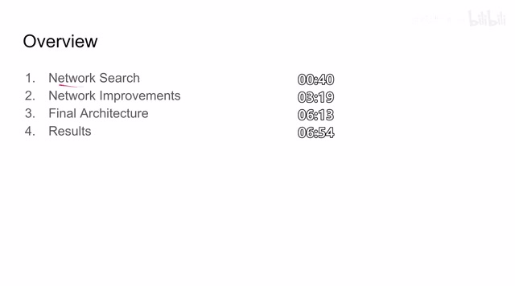
00:00:30–00:00:41 · 画面 00300:00:41–00:00:51 · 画面 004
00:00:41–00:00:51 · 画面 00400:00:51–00:00:58 · 画面 005
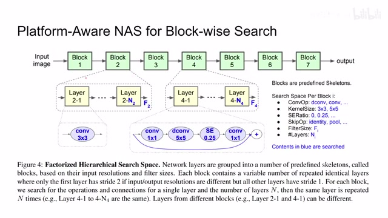
00:00:51–00:00:58 · 画面 005那他的思想呢就是我先把我们的网络划分成一个 block 然后每个 block 里面呢就是相同的 layer 重复很多次然后呢我在搜索每个 block 里面这个 layer 的具体参数就可以了而经过这个 blockwise search 之后呢我们呢还想对里面的 layer 做微调嘛这里呢作者就采用了这个 netadapt 然后呢做这个 layerwise search
00:00:58–00:00:59 · 画面 006
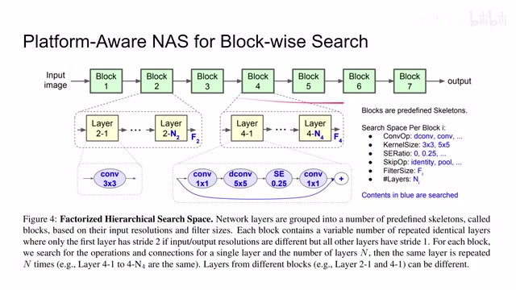
00:00:58–00:00:59 · 画面 00600:00:59–00:01:02 · 画面 007
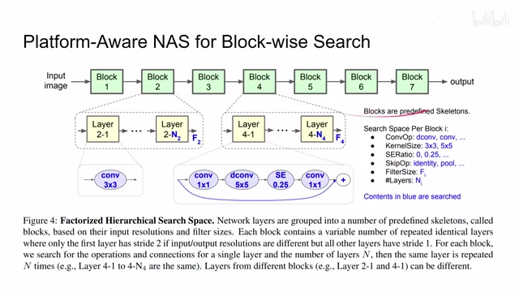
00:00:59–00:01:02 · 画面 00700:01:02–00:01:04 · 画面 008
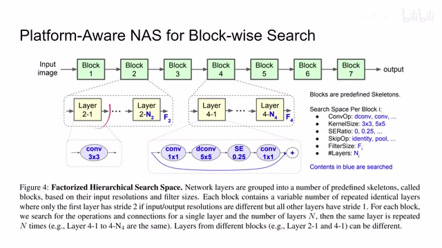
00:01:02–00:01:04 · 画面 00800:01:04–00:01:05 · 画面 009
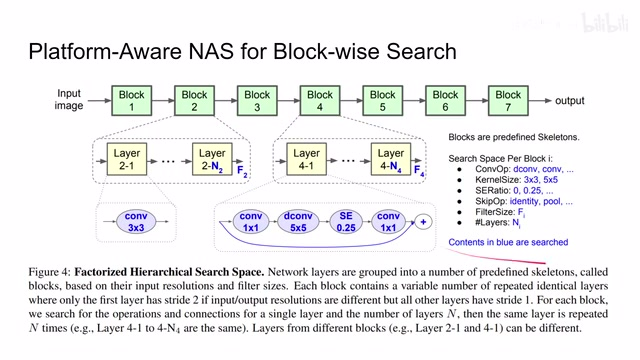
00:01:04–00:01:05 · 画面 00900:01:05–00:01:14 · 画面 010
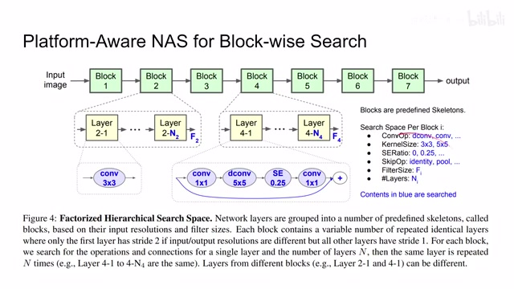
00:01:05–00:01:14 · 画面 01000:01:14–00:02:41 · 画面 011
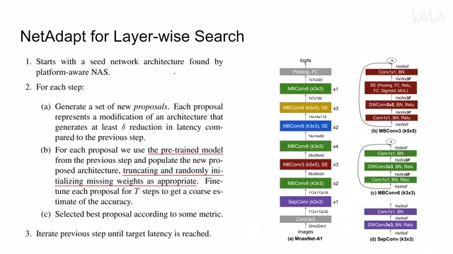
00:01:14–00:02:41 · 画面 011NetAdapt 也是另一篇论文但是因为它的主要思想在这篇论文里面已经介绍的差不多了所以我们就单独不再讲这一篇了那么我们来看一下这个 NetAdapt 的流程首先它是从我们的 MnasNet 上开始那么我们既然已经有搜好的结构了那就直接拿过来用这个就是 MnasNet 它一开始的结构然后我们就开始搜索这里 NetAdapt 的核心思想就是我维护一个表去记录每一个 layer 它对应的不同的宽度不同的尺寸的时候呢它产生了 latency 这样呢我在产生新的 proposal 的时候呢就能在我实际到设备上运行之前对我这个新的 proposal 新提出的这个网络它的一个 latency 它运行的时间有一个大概的估计随后呢对于我们新提出的这个模型呢我们先把原来的 pretrained 的模型里面大部分的参数呢都拿过来
当然如果有模型结构不太符合的地方我们就做一些随机的参数来给它盖过去那么有了这样一个 pre-trained model 之后我们只需要做一个 fine-tuning 就可以大概估计出这个模型结构能给我们带来多高的准确率这样就避免了我原来从头直接 train 一个 network 这样的大的计算量能够进一步提高我们搜索的速度那么随后有了准确率我们就可以选一些好的 proposal 了
00:02:41–00:03:20 · 画面 012
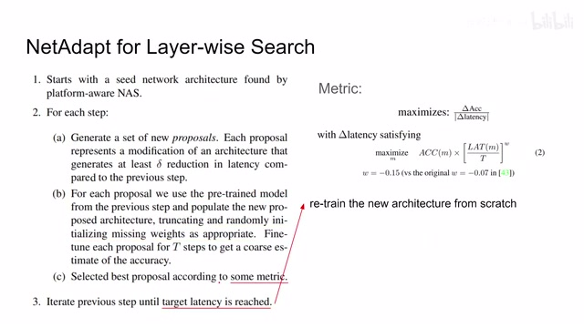
00:02:41–00:03:20 · 画面 012那么这里呢这一所谓的这个评价的准则这个 metric 呢在本文中呢指的是我们的准确率的 delta 比上 latency 的 delta 同时呢我们搜索模型的整个的这个 target function 呢也做了一点改变就是这个 w 的值现在变成了负的 0.15 了随后呢我们就不断的去重复这个步骤直到我们的模型它的延迟说已经足够低了满足我们的需求了这个时候我们把这个网的结构拿出来重新 train 一下那么以上是我们如何对这个模型它的网络结构进行搜索那么下面我们看到作者除了在搜索策略上的改进之外还有就是它在模型结构本身上面的改进那么关于模型里面的改进它主要是分为三个部分第一个就是里面一些原来计算起来非常麻烦的层做了修正那么最明显的就是模型的最后的阶段
00:03:20–00:05:20 · 画面 013
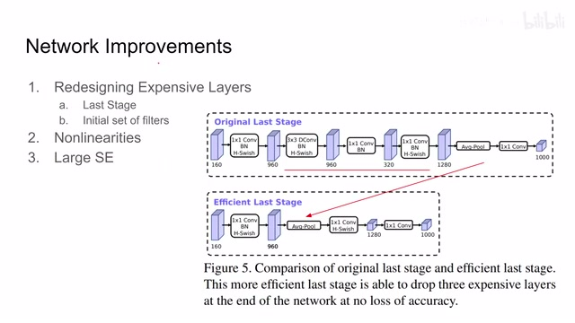
00:03:20–00:05:20 · 画面 013我们可以看到在原来的设计中呢这个是先做了一个 mobile net 的 block 然后呢拿到这个 bottleneck 之后呢再做 expansion 做到 1280 的这个 channel 然后呢再做 average pooling 最后呢再输出我们 1000 个结果这个是做 image net 的网络结构那这里呢作者认为我既然反正都是要在这个高的 dimension 做 pooling 那我直接把这一串都省掉了我直接那我直接在这个地方第一次做 expansion 的时候我就直接做这个 average pooling
省去中间商赚差价，这样子呢，就把这一串呢，提前过来这里呢，是在做一个 projection，那就是我们原来的这个模块，但是与之区别是呢，它取消这个 batch normalization，然后呢，换了激活函数，也是这个 h-swish。作者说，经过这样的修改之后呢，我们去掉了三个计算起来非常麻烦的层，但是准确性呢，也没有丧失，这个呢，对应的是这个 last stage。
那么此外呢，我们知道在一开始 MobileNet 它的一开始的一层是一个普通的这个卷积，它会产生 32 个 filter，这些 filter 呢，主要就是一些边缘检测中，但是通过可视化呢，作者发现这些边缘呢，很多都是有镜像啊对称的关系的，说明还是有存在一定的冗余，那么这里呢，作者通过更换这个激活函数，然后呢，进一步的把一开始的这个 filter 的数量呢，减少。
因为我们一开始的 filter 包括激活函数都是运行在一个相对较大的尺度上的，那么如果你能够减少他的运算量的话，对我们整体计算量的减少呢，是显而易见的，所以呢，作者把这里原来 32 个 filter 呢，改成了 16 个 filter，那么换了新的激活函数，减少了很多的计算量，那么随后呢，我们看一见这个 h-swish 它到底是个什么东西，就是对应的这一部分 nonlinearities，一个非线性的激活函数。
可以看到原来我们有一种这个激活函数叫做 swish，它是 x 乘上这个 sigma 的 s，那你看到 sigma 的你就知道原来的计算量它是非常恐怖的，那么现在作者说我把它换成这个 ReLU6，那么这个新的 hard-swish 它对应的表达式就是这个，那么你可以看到它的可视化跟我们 sigma 的还有跟这个 swish 它来对比差别不是很明显，但是计算它你的效率就可以非常高了。
00:05:20–00:05:40 · 画面 014
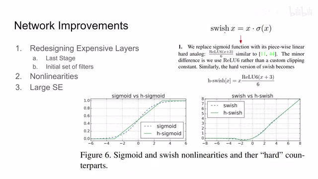
00:05:20–00:05:40 · 画面 01400:05:40–00:05:41 · 画面 015
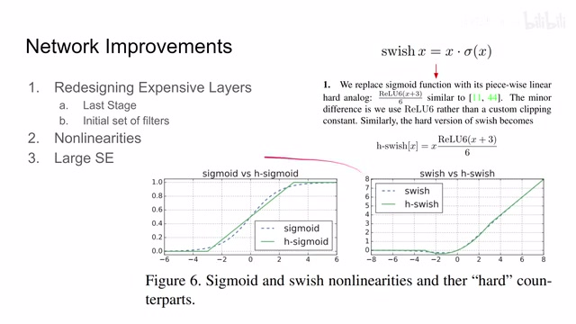
00:05:40–00:05:41 · 画面 01500:05:41–00:05:52 · 画面 016
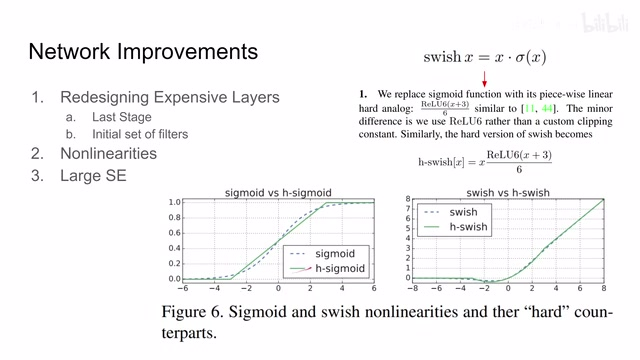
00:05:41–00:05:52 · 画面 016就比这个 sigmoid 的要简单很多，我们叫做 MobileNet v3 Small，这种呢叫做 MobileNet v3 Large，啊一种小一种大吗，你可以看到呢，这是他的网络结构，这里呢，你可以看到他一开始的 filter 数量呢，变成了 16，然后呢，是 MobileNet v2 里面的这个 bottleneck 的结构，那么注意呢，有的层呢，是 SE，然后他的激活函数呢，是 ReLU，那么到后面更高级的层呢，他的侦测数量的减少呢，我们就可以换用更强的激活函数就是 h-swish。
00:05:52–00:06:28 · 画面 017
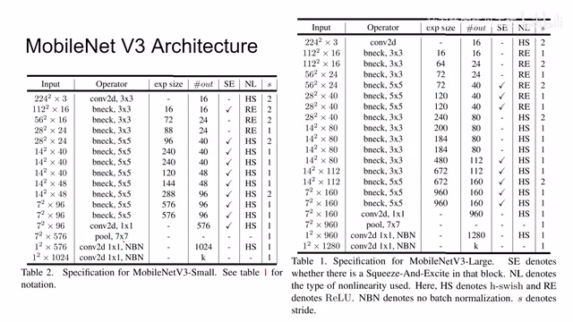
00:05:52–00:06:28 · 画面 017那么再往下呢，你可以看到最后呢，是我们优化过的这个最后的阶段，那注意呢，这几个 convolution 呢，它是没有 batch normalization，那么这边呢，是我们一个更大的网络，那么最后呢，我们就可以看到作者汇报的结果了，首先呢，是图像分类，那 image net 这里的横轴呢，是 latency，横轴呢，是准确率，那可以看到一些漂亮的数字，outperform 之前 mnas 还有这个 MobileNet v2，这也很有意思，之前有朋友问这个 Pixel 1 是什么意思啊。
00:06:28–00:06:31 · 画面 018
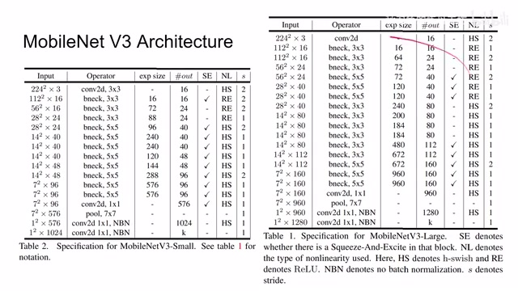
00:06:28–00:06:31 · 画面 01800:06:31–00:07:01 · 画面 019
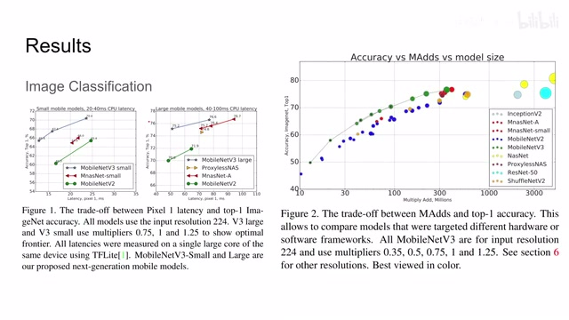
00:06:31–00:07:01 · 画面 019它并不代表一个像素，它是谷歌的那款手机，写论文给自己厂里的产品带货，很真实，再看这边，从理论上预算数量的角度对比了其他的一些网络，也是一些美好的数字，那么再往下我们看到做了一些 ablation，它主要的就是来评估 h-swish 对我们性能的影响，你可以看到在第一层只有使用 filter 的时候使用 h-swish。
00:07:01–00:08:03 · 画面 020
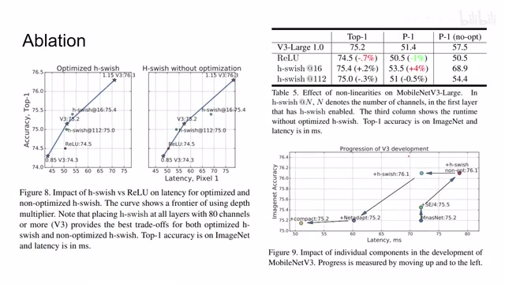
00:07:01–00:08:03 · 画面 020它呢，就是实验出来得到一个好的结果，而且呢，经过他们的优化呢，在运行时间上呢，有一定的削减，那么这个图呢，就反映他们的 WordSwitch 是怎么样开发迭代出来的，可以看到这里从 MnasNet 出发呢，我们加上固定的 0.25 的这个 SE 呢，然后呢，再加上 h-swish 对吧，再经过优化再加上这个 NetAdapt 它的搜索呢，最后呢，稍微收缩了一下模型，那变成最终的这个样子。
那么此外呢，作者还测试了像 Object Detection 就是 COCO 数据集吧，还有 Semantic Segmentation，如果你感兴趣的话可以在论文原文中查看，那么总的来说这篇的工作呢，其实也是一个大的 engineering，就是把我们之前运到的各种 trick 呢，再进一步推向了极致，那么以上呢，就是我对这篇论文的简单的分析，感谢您的收看，再见。
00:08:03–00:08:03 · 画面 021
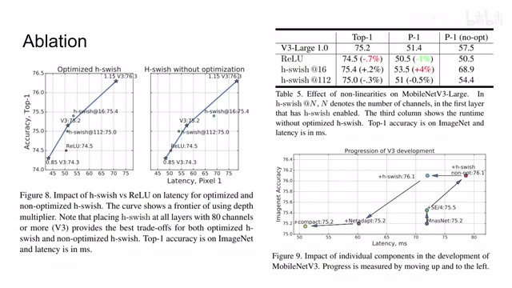
00:08:03–00:08:03 · 画面 021转写与来源说明 · 0 个自动复核提示
保留 18 个原始语音片段，0 个片段触发自动复核提示。提示仅用于定位可能的术语、重复或识别问题，不等于已确认错误。
讲解画面为源视频截图（640×360），不是可编辑 PPT 文件。全片按每秒 2 帧扫描内容变化，逐步展开页保留；连续动画保留代表画面。清晰度受源视频限制。
原视频：paper/合集_2026-10-16_新模型/[论文简析]Searching for MobileNet V3[1905.02244].mp4
SHA-256：169ab9c4027f60e28e4fe26a1201966bbc2c2d8071d6589c5c8f59d823cafa50
全文按视频语音与画面制作。原论文可从上方链接下载；完整资料包保留全文、原始逐字稿、字幕和校对记录。